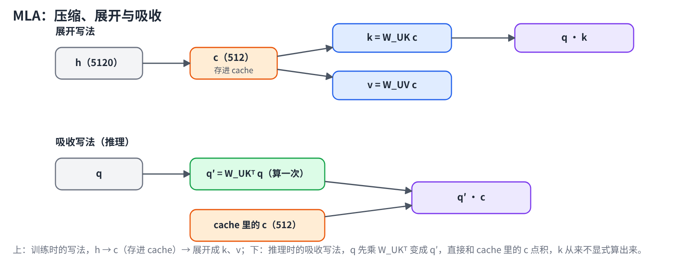
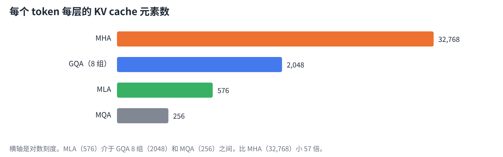
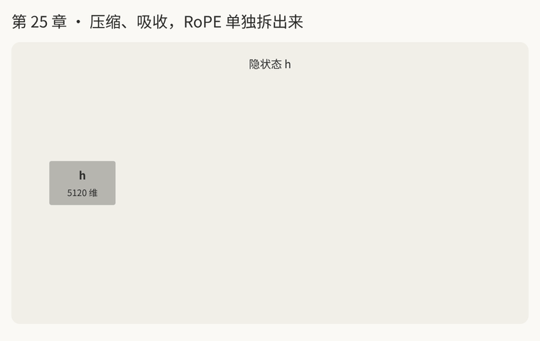

第 25 章 · MLA：把 K、V 压成一个小向量存，用时再展开；RoPE 为什么要单独拆出来
本地运行
git clone https://github.com/wikieden/beyond-transformer
cd beyond-transformer/code/notebooks
pip install jupyterlab torch numpy
jupyter lab ch25_mla.ipynb也可以下载后直接用 VS Code 打开 .ipynb 运行。需要 GPU 的章节在 Colab 里选「代码执行程序 → 更改运行时类型 → GPU」。
本章回答：GQA 靠“几个头共用一组 K、V”省 cache，代价是表达能力打折。DeepSeek-V2 的 MLA 换了一条路：每个 token 只存一个低维的压缩向量，K、V 用时再展开，cache 比 GQA 还小、效果还和 MHA 一样好。可是“用时再展开”不就把计算加回来了吗？为什么说展开矩阵能被“吸收”进 query？RoPE 又为什么和这种吸收冲突，非得单独拆一段出来？
讲解日期：2026-11-26 · 上一章：第 24 章 大厂怎么选配置 · 下一章：第 26 章 读源码：nanoGPT vs nanochat
对应原文：DeepSeek-V2llm-full-stack/materials/text/papers/deepseek-v2-mla-2405.04434.txt§2.1.2 Low-Rank Key-Value Joint Compression L328–L345（c = W_DKV h、k = W_UK c、v = W_UV c，只缓存 c；推理时 W_UK 吸收进 W_Q、W_UV 吸收进 W_O）、§2.1.3 Decoupled RoPE L359–L398（RoPE 夹在 W_Q 和 W_UK 之间、矩阵乘法不可交换，吸收不了；另加多头 q^R 和共享的 k^R 带 RoPE，式 14–19）、Table 1 L404–L416（每个 token 的 cache 元素：MHA 2n_h d_h l、GQA 2n_g d_h l、MQA 2d_h l、MLA (d_c + d_h^R) l ≈ 4.5 d_h l，相当于 2.25 组的 GQA）、§3.1.2 L590–L600（60 层、128 头、d_h = 128、d_c = 512、d_h^R = 64）；DeepSeek-V3distributed-pretraining/materials/papers/deepseek-v3-2412.19437.pdf§2（MLA + DeepSeekMoE + MTP 的组合）
本章缩写：MLA = Multi-head Latent Attention（多头 / 潜在 / 注意力）；latent（潜在向量：压缩后的低维表示）；c^KV = KV 的压缩向量；d_c = 压缩维数；W_DKV = Down-projection（下投影：压缩）；W_UK、W_UV = Up-projection（上投影：展开成 K、V）；absorb（吸收：把一个矩阵提前乘进另一个，计算时不用单独算）；d_h^R = 带 RoPE 那一小段的每头维数；MTP = Multi-Token Prediction（多 token 预测）。全部缩写见 附录 · 缩写与术语表
讲解
第一步：只存一个压缩向量（2026-11-26）
类比：存压缩包，用时再解压。 MHA 每个 token 每层要存 128 个头 × 128 维 × K、V 两份 = 32,768 个数；MLA 先把隐状态压成 512 维的 c，cache 只存 c，需要时再“解压”成 K 和 V。
§2.1.2（L328–L338）：
| 矩阵 | 形状（DeepSeek-V2） | 作用 |
|---|---|---|
| W_DKV | 512 × 5120 | 压缩：隐状态 → c |
| W_UK | (128 头 × 128) × 512 | 展开成所有头的 k |
| W_UV | (128 头 × 128) × 512 | 展开成所有头的 v |
K 和 V 共用同一个 c（“joint compression”），所以只存一份。这是低秩分解：K = W_UK·W_DKV·h，K 投影矩阵的秩最多 512。
一句话：MLA 每个 token 只缓存一个 d_c = 512 维的压缩向量 c，K、V 都由它乘上投影矩阵展开得到。
第二步：展开矩阵可以吸收进 query（2026-11-26）
“用时再展开”听起来要为每个历史 token 算一遍 k = W_UK c，计算就加回来了。但注意力分数是 q·k：
把 W_UK 的转置先乘到 q 上（每步只算一次），再直接和每个历史 token 的 c_j 点积，根本不用展开 k。同理 W_UV 可以吸收进输出投影 W_O（L340–L342）。
数字演示（玩具：隐层 16 维、c 4 维、k 8 维；一个 query 对 5 个历史 token）：
| 算法 | 5 个分数 |
|---|---|
| 先展开 k = W_UK c，再和 q 点积 | [0.9098, −3.2776, −1.449, 1.6677, −2.769] |
| 先算 q′ = W_UKᵀq，再和 c 点积 | [0.9098, −3.2776, −1.449, 1.6677, −2.769]（差 2.2 × 10⁻¹⁶） |
完全一样，只是乘法顺序换了（矩阵乘法的结合律）。推理时每个 token 只需要读 512 维的 c，计算量也不比 MHA 多。

图 25-1 · 上：训练时的写法，h → c（存进 cache）→ 展开成 k、v；下：推理时的吸收写法，q 先乘 W_UKᵀ 变成 q′，直接和 cache 里的 c 点积，k 从来不用显式算出来一句话：q·(W_UK c) = (W_UKᵀq)·c，把展开矩阵吸收进 query，推理时直接用压缩向量算注意力，不用展开 K。
第三步：RoPE 夹在中间就吸收不了，所以单独拆出来（2026-11-26）
想给 k 加 RoPE（第 15 章）：k_j = R_j W_UK c_j，q 也转：R_t q。分数变成
现在要吸收，就得算 q′ = W_UKᵀ R_{j−t}ᵀ q：它依赖 key 的位置 j，每个历史 token 都要一个不同的 q′，等于又把每个 k 展开了一遍（§2.1.3，L359–L367：“RoPE 矩阵夹在 W_Q 和 W_UK 之间，矩阵乘法不满足交换律”）。
数字演示（同一个 q，要用的 q′ 随相对位置变）：
| 相对位置 j − t | 要用的 q′ |
|---|---|
| 0 | [−1.1272, 0.8491, −0.6219, 1.1191] |
| −1 | [−1.248, 1.0446, −0.7161, 1.1205] |
| −4 | [−1.4249, 1.5033, −0.603, 1.2009] |
decoupled RoPE（L368–L398，式 14–19）：k、q 都分成两段拼起来：
- 内容段：k^C = W_UK c，不加 RoPE，可以吸收；
- 位置段：一小段 d_h^R = 64 维的 k^R = RoPE(W_KR h)，所有头共享一个；q 也有对应的 q^R。这一段单独缓存。
分数 = 内容段的点积 + 位置段的点积，再除以 √(d_h + d_h^R)。
一句话：RoPE 的旋转依赖位置、夹在 q 和 W_UK 之间，吸收就失效；MLA 把 RoPE 放到单独的一小段（64 维、各头共享）上，内容段照样吸收。
第四步：cache 账（2026-11-26）
DeepSeek-V2 的 Table 1（L404–L416），60 层、128 个头、d_h = 128，每个 token 的 cache 元素数：
| 结构 | 每层 | 60 层 |
|---|---|---|
| MHA | 2·128·128 = 32,768 | 1,966,080 |
| GQA（8 组） | 2·8·128 = 2,048 | 122,880 |
| MQA | 2·128 = 256 | 15,360 |
| MLA | 512 + 64 = 576 | 34,560 |
MLA 每层 576 = 4.5·d_h，相当于只有 2.25 组的 GQA（L401），比 MHA 小 57 倍，而论文的实验里效果比 MHA 还好。DeepSeek-V3 沿用了 MLA，再配上第 30 章的 DeepSeekMoE 和多 token 预测（MTP）。

图 25-2 · 每个 token 每层的 KV cache 元素数（对数刻度）。MLA（576）介于 GQA 8 组（2048）和 MQA（256）之间，比 MHA（32,768）小 57 倍场景代码：MLA 推理时的吸收写法（按 DeepSeek-V2 的公式写的 PyTorch 示意；本书 chapter-code 只用 NumPy，这段没跑过）：
c_kv = self.w_dkv(h) # (B, T, 512)，存进 cache
k_rope = rope(self.w_kr(h), pos) # (B, T, 64)，各头共享，也存进 cache
q_nope, q_rope = self.w_uq(self.w_dq(h)).split([128, 64], -1) # 每个头的内容段和位置段
q_abs = torch.einsum("bhd,hdc->bhc", q_nope, self.w_uk) # 吸收：q′ = W_UKᵀ q，(B, H, 512)
scores = (torch.einsum("bhc,btc->bht", q_abs, cache_c) # 内容段：直接和 c 点积
+ torch.einsum("bhr,btr->bht", rope(q_rope, pos), cache_kr)) / math.sqrt(128 + 64)
一句话：MLA 每个 token 每层存 d_c + d_h^R = 576 个数，相当于 2.25 组的 GQA，比 MHA 小 57 倍，效果不降。
动画演示：压缩、吸收、RoPE 拆出来

可交互版：animations/25-mla.html（▶ 播放 / → 单步；下拉：展开写法 / 吸收写法）。
怎么看：
- 一个 token 的隐状态（5120 维）被压成 c（512 维）存进 cache（第一步）；
- 展开写法：每个历史 token 的 c 都要乘 W_UK 变成 k；吸收写法：只把 q 乘一次 W_UKᵀ，直接和所有 c 点积（第二步）；
- 最后一步：旁边多出一条 64 维的 k^R 通道，专门带 RoPE（第三步）；右上角是每个 token 的 cache 元素数。
练习与作答记录
题 1（第一步）：d_c = 512、d_h^R = 64、27 层，每个 token 的 MLA cache 是多少个元素？bf16 下 100,000 个 token 是多少 MiB？
题 2（第二步）：q 是 128 维、W_UK 是 128 × 512。吸收写法里，每步要做一次什么形状的矩阵乘法？对 t 个历史 token，点积的维数是多少？
题 3（第三步）：如果位置段 k^R 不是各头共享，而是每个头一个 64 维，每层的 cache 变成多少个元素？
口诀
存压缩包，用时再解压：K、V 共用一个五百一十二维的 c。
q 点 W 乘 c，等于 W 转置乘 q 再点 c：展开矩阵吸收进 query，不用解压。
RoPE 夹在中间随位置变，吸收就失效：单独拆一段六十四维、各头共享的 k^R 带位置。
每层五百七十六个数，相当于两组多的 GQA，比 MHA 小五十七倍。
本章复习卡片
必背：B58–B59（B58 MLA 的压缩和吸收；B59 decoupled RoPE 和 cache 账）。练习做完后，按答错、卡住的地方再补。
附录 · 延伸阅读
留给以后深入学习用，不影响本章主线。★ 是建议先读的。
推荐阅读
| 读什么 | 读哪里 | 读它为了什么 |
|---|---|---|
| ★ DeepSeek-V2（2024） | §2.1.2–§2.1.3 L328–L416；§3.1.2 L590–L600 | MLA 的公式、decoupled RoPE、cache 表 |
| DeepSeek-V3（2024） | §2（PDF） | MLA + DeepSeekMoE + MTP |
| 《数学与实验统计》第 48 章 高效注意力 | MLA 低秩 KV 一节 | 同一结构的数学账 |
| 本书 第 15 章 RoPE、第 22 章 GQA | 全部 | 本章的前提 |
数学原理
- 低秩分解：W_K^{eff} = W_UK W_DKV，秩 ≤ d_c；所有头的 K 都落在同一个 d_c 维子空间里。
- 结合律吸收：qᵀ(W_UK c) = (W_UKᵀ q)ᵀ c；W_O W_UV 同理可以预先合并。
- 不可交换：R_{j−t} W_UK ≠ W_UK R′，旋转夹在中间就没法把 W_UK 移到另一边。
- decoupled 的分数：q_iᵀk_{j,i} = q_i^{Cᵀ}k_{j,i}^C + q_i^{Rᵀ}k_j^R，两段相加。
公式清单
| 公式 | 意思 |
|---|---|
| \(c_t^{KV} = W^{DKV}h_t\) | 压缩（只缓存它） |
| \(k_t^C = W^{UK}c_t^{KV}\)，\(v_t^C = W^{UV}c_t^{KV}\) | 展开 |
| \(q^\top W^{UK}c = (W^{UK\top}q)^\top c\) | 吸收 |
| \(k_t^R = \text{RoPE}(W^{KR}h_t)\)，各头共享 | decoupled RoPE |
| cache = \((d_c + d_h^R)\cdot l\) | 每个 token 的元素数 |
代码对照：把本章的数字用代码算一遍
NumPy。代码在仓库本地
beyond-transformer/solutions/chapter-code/ch25_mla.py，配套测试tests/test_ch25.py，notebook 在notebooks/ch25_mla.ipynb：
bash cd beyond-transformer/solutions/chapter-code uv run python ch25_mla.py uv run pytest tests/test_ch25.py
讲义 ↔ 代码：
| 讲义 | 公式 | 写法 | 跑出来 |
|---|---|---|---|
| 第二步 吸收 | W_UKᵀq·c | scores(hq, hs, M) |
两种写法差 2.2e-16 |
| 第三步 RoPE 冲突 | W_UKᵀR_{j−t}ᵀq | absorbed_query_with_rope(hq, M, rel) |
随相对位置变 |
| 第四步 cache | (d_c + d_h^R)·l | cache_elems(kind) |
34,560 vs 1,966,080 |
关键几行：
c = np.array([M["W_DKV"] @ h for h in hs]) # cache 里只存 c
expand = np.array([q @ (M["W_UK"] @ ci) for ci in c]) # 先展开再点积
absorbed = c @ (M["W_UK"].T @ q) # 吸收：q′ 只算一次
return M["W_UK"].T @ rot_matrix(rel).T @ q # 加了 RoPE 后 q′ 依赖相对位置
代码里才看得到的 2 件事：
- 训练时一般不吸收：训练是整段并行算的，直接展开 K、V 更简单；吸收只在逐 token 推理、需要省读写时才用。
- 这里只演示单头：真实的 W_UK 是每个头一块（128 个头 × 128 维），吸收后每个头得到一个 512 维的 q′；所有头共用同一份 c。
自己改一改（不影响练习答案）：
- 把
DC从 4 改成 8（和 k 一样大），吸收还成立吗？cache 还省吗？ - 给
cache_elems换成 DeepSeek-V3 的设定（61 层、d_c = 512、d_h^R = 64），每个 token 多少个元素？